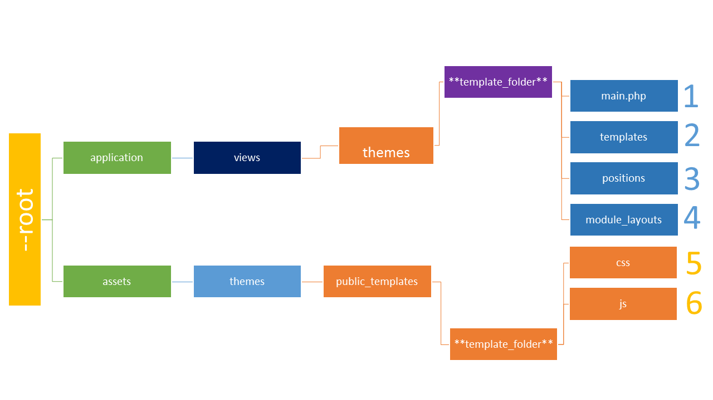
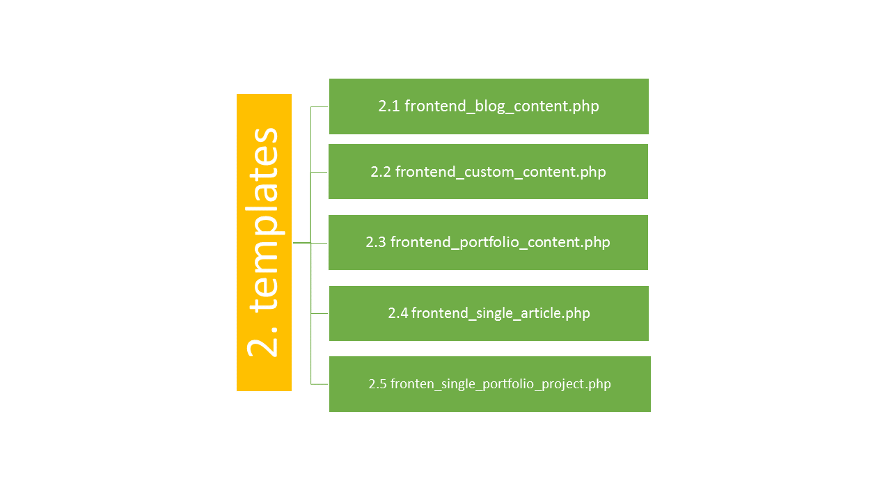
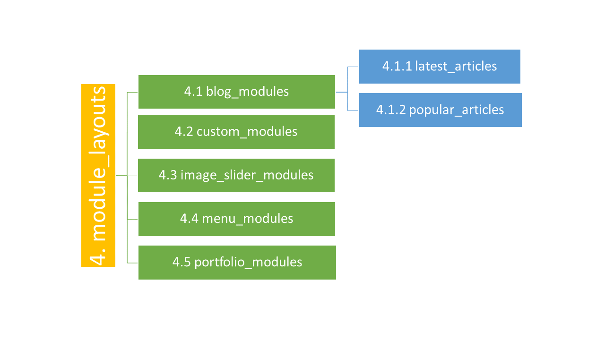

Blogit CMS
Description
Blogit CMS is hosted on BitBucket and is available for use under the Envato Market Licence. You can report bugs and discuss features on the Codecanyon Product Webpage.
Requirements
*Developed with Codeigniter version: 2.2.0
*Check out Codeigniter Manual here
The Blogit CMS is stand alone application with lifetime updates for no charge.
You have to host the Blogit CMS online in order to work, or locally using WAMP, XAMP or MAMP Server etc.
-- PHP 5.3+
-- MYSQL 5+
-- PHP MYSQL Extension
Blogit Features
-Blog
-Portfolio
-Menus
-Pages
--Blog Page
--Portfolio Page
--Custom Coded Page
-Modules
--Blog Modules(Latest Articles, Popular Articles)
--Portfolio Module(Latest Projects)
--Menu Module(Show menus everywhere you like on webpage)
--Image Slider Module
--Custom Coded Module
-Users
--Usergroups
--User Privilleges
--Usergroup Privilleges
Installation
1. Place all folders and files inside your hosting root folder
2. Insert new.sql file to your database using phpMyAdmin or any other tool your hoster is providing
3. Visit application->config->database.php and change the database settings accordingly
4. Visit application->config->config.php and change these lines to your choise
--------> $config['base_url'] = 'http://www.your_awesome_domain_here.com/';
--------> $config['site_url'] = 'http://www.your_awesome_domain_here.com/';
Getting Started
Online Demo
Note: You can checkout the online demo of Blogit CMS on our hosted server. Demo will be updated every time a new Blogit version is released so you can check out all new features available.
Create Your First Page
Follow the step by step guide to publish your first page
Frontend
--> Follow the "Admin Backend" link on the menu

Login
--> Login with username: admin || password: password

Admin Dashboard
--> This is the Admin Dashboard

Custom Coded Page
--> Let's Create About Us page using the custom coded page from Blogit

--> You can paste or create any html code you like and build your page content.
--> Alternatively you can assign modules to your page to build your content dynamically.

Assign Modules to your page
--> Modules are used to construct your page layout dynamically.
--> Check more informations about modules here .

Access Level
--> Choose who can access your new page.
--> Check more informations about access level and user privileges here .

Webpage Menu
--> Each new menu you create, you have to assign it to a Menu Module(*see menu modules above), in order to be shown at the webpage
----> Assigning a module to a page is described above when we created our Custom Coded Page.
----> All modules are assigned to a module position. Template Positions are shown in the Templates Section
Create New Menu
--> Let's create our header menu, with links to our pages
----> Visit Menus->Add Menu
------> Check the pages you want to be shown as links to the menu.
------> Check The access level of the menu (*who can see the menu).
------> Set the status to Published in order to be shown at the frontend.

Set Menu Pages Order
--> Visit Menus-> Manage Menus -> *Your New Menu*
----> Drag Drop using the yellow arrow at the left of each page to order the pages and click *Click here to Order Assigned Pages*
----> Assign more pages or remove pages using the yellow button at the top, *Assign More Pages*

Modules
Modules and page content

Modules Options
These options are common for every module type
Module Position
Choose the template position you want your module to be shown inside the page
*Positions and the way to create one are described in For Developers -> Templates

Module Layout
Module Layout is like a module template. You can create as many modules layouts for every type of module. That makes easier to create modules of same type, for use in different positions on the page.
*Module Layouts and the way to create one are described in For Developers -> Templates

Module Access Settings
Access Level user must have in order to see module content. Let's say you want a module content to be visible only to NON Public users. Just select the privilege you have assigned to that usergroup that content must be visible and that's it. You are ready to go.

Custom Code Module
Place any custom html code you like inside Content
*Use the Source Button to put any html code inside

Image Slider Module
Create Modules with images and images captions

Choose Photos clicking the File Browser button. A pop up window will appear.

Portfolio Module
List a chosen number of your portfolio projects
Just Choose the portfolio Categories you want

Menu Module
Show a chosen menu

Blog Modules
Latest Articles and Popular Articles
Choose the Blog Categories you like to show your latest or popular articles


User Management
How to structure your content depending on users access levels
*The ACL management is based on privileges that can be granted by users and/or usergroups. Example: 2 users assigned on the same usergroup, one can create new users but second one can only view users.
Create New User
Just fill out the user credentials including the password field
*Password must contain at least 8 alphanumeric characters.
*You can assign the user to a usergroup. By default Blogit has 3 main usergroups: Public, Moderator and Master Admin

Choose your avatar using File Browser

After You have created your new user, you can assign privileges different from the usergroup you assigned him/her.
*That function is usefull under different situations.

Create New Usergroup
You can assign multiple Users in every Usergroup
A usergroup can access admin area only if "Is Admin Group" is enabled

After You have created your new usergroup, you can assign the privileges of the usergroup

Create New Privilege
Privileges is the core function of Blogit ACL. Each Usergroup and/or User can have multiple privileges.
*For your easiest way to manage frontend privileges we have added a simple way to seperate privileges used to manage the Blogit Backend. So each time you create a new privilege for Frontend(webpage only) use,
just check the switch "For Frontend Use Only?"


For Developers
Code stuff you can use to build a custom Frontend
Templating System
The way blogit templating system is structured

How templating functions are loaded?
According to the diagram above the logic structure of templating system, beggining from the outer to the inner functions are like :
1. main.php loads the Templates(echo $output) and/or positions if needed.
2. Templates loads positions inside the webpage.
3. Positions are modules loaders inside webpage template.Its position can load as many modules you like.
4. Modules are dynamic content loaders and each one can have its own unique layout(phtml).
1. main.php
main.php file is the template loader called by root-->application-->core-->Public_Controller.php.
System Automatically calls the chosen Default Template (by template title), main.php file.
Every main.php file contains the common html(eg: seo meta), css and js loader(described below).
Also you can load template positions(described below) on main.php file(eg: navigation position, footer position)

CSS Loader
The CSS files loader.
Loads automatically every .css file inside root->assets->themes->public_templates-->**your_template_name**-->css
Follow the diagram to the number 5
JS Loader
The JS files loader.
Loads automatically every .js file inside root->assets->themes->public_templates-->**your_template_name**-->js
Follow the diagram to the number 6
Google Analytics
Google Analytics loader.
Put the code at the bottom of your main.php file.
*at line ga('create','echo $settings->google_analytics_tracking_id', 'auto'); don't forget to include php begging and ending of
echo $settings->google_analytics_tracking_id
Load Page Template
We have 3 different page types: Blog, Portfolio and Custom
Also the are the 2 single page types: Single Article , Single Portfolio Project
Each type has a different template file inside 2. Templates folder according to the diagram
The way to load template file inside main.php file is like the code below:
echo $output;
Load Positions
The way to load positions in the main.php is the exactly the same loading positions inside templates files.
***Remember: if you change the position file name, you have also to change the name, inside the main.php or template file, you have loaded the position
echo $this->load->get_section('nav'); // Loads the position called 'nav'
echo $this->load->get_section('footer'); // Loads the position called 'footer'
You can always check template positions from Blogit Backend just navigate through
Themes-> **Your_Template**-> Positions

2. templates
Templates are loaded automatically based on the page type content

2.1 frontend_blog_content.php
This template is used automatically when blogit renders frontend blog page.
Use code below to Generate article list using a foreach loop and another foreach inside the first one to show article media like bellow.
foreach ($articles as $article):
foreach($articles_media as $media):
if ($media->article_id == $article->id):
//Structure Articles Media data using 2.1.2 table bellow//
endif;
endforeach;
//Structure Articles data using 2.1.1 table bellow//
endforeach;
2.1.1 Articles Data
Articles Data to structure blog page content
| Name | Data | Description |
|---|---|---|
| Article ID | echo $article->id; | Show article id |
| Article Title | echo $article->title; | Show article title |
| Article Slug | echo $article->slug; | Show article slug |
| Article Publication Date | echo $article->pubdate; | Show article Publication Date |
| Article Created Date | echo $article->created; | Show article creation date |
| Article Author | echo $article->upro_first_name.' '.$article->upro_last_name; | Show article author |
| Article Category | echo $article->category_title; | Show article category assigned |
| Article Body |
$string = word_limiter($article->body, 70);
echo $string; |
Show article Body with word limitation |
| URL to single article page | echo site_url();/echo $page->slug;/echo $article->category_slug;/article/echo $article->id;/echo $article->slug; | Anchor href to link to single article page |
2.1.2 Articles Media(images) Data
Articles Media Data to structure blog page content
| Name | Data | Description |
|---|---|---|
| Image Path | echo $media->image_path | Full path to image(for use with img src) |
| Image Caption | echo $media->image_caption | Shows Image Caption |
| URL to single article page | echo site_url();/echo $page->slug;/echo $article->category_slug;/article/echo $article->id;/echo $article->slug; | Anchor href to link to single article page |
2.2 frontend_custom_content.php
This template is used automatically when blogit renders frontend custom coded (html, php, javascript, etc...) page.
Use code below to load the custom page content from blogit admin area(backend)
echo $page->body;
2.3 frontend_portfolio_content.php
This template is used automatically when blogit renders frontend portfolio page.
Use code below to Generate portfolio project list using a foreach loop and another foreach inside the first one to show project media like bellow.
foreach ($projects as $project):
foreach($projects_media as $media):
if ($media->project_id == $project->id):
//Structure Projects Media data using 2.3.2 table bellow//
endif;
endforeach;
//Structure Projects data using 2.3.1 table bellow//
endforeach;
2.3.1 Projects Data
Projects Data to structure Portfolio page content
| Name | Data | Description |
|---|---|---|
| Project ID | echo $project->id | Show project id |
| Project Title | echo $project->project_title | Show project title |
| Project Slug | echo $project->project_slug | Show project slug |
| Project Description | echo $project->project_description | Show project description |
| Project Client Name | echo $project->client_name | Show project client name |
| Project Client Description | echo $project->client_description | Show project client description |
| Project Client Webpage | echo $project->client_url | Show project client webpage url |
| Project Webpage | echo $project->project_url | Show project webpage url |
| Project Company Proposal | echo $project->company_proposal | Show company proposal for the project |
| Project Developer | echo $project->developer | Show project developer |
| Project Date Is Finished | echo $project->date_project_done | Show project date is delivered to client |
| Project Category Title | echo $project->category_title | Show project category title |
| Project Category Slug | echo $project->category_slug | Show project category slug |
| URL to single project page | echo site_url();/echo $page->slug;/echo $project->category_slug;/project/echo $project->id;/echo $project->project_slug; | Anchor href to link to single project page |
2.3.2 Projects Media(images) Data
Projects Media Data to structure portfolio page content
| Name | Data | Description |
|---|---|---|
| Image Path | echo $media->image_path | Full path to image(for use with img src) |
| Image Caption | echo $media->image_caption | Shows Image Caption |
| URL to single project page | echo site_url();/echo $page->slug;/echo $project->category_slug;/project/echo $project->id;/echo $project->project_slug; | Anchor href to link to single article page |
2.4 frontend_single_article.php
This template is used automatically when blogit renders frontend blog article page.
Generate Single Article Data
foreach($articles_media as $media):
if ($media->article_id == $article->id):
//Structure Article Media data using 2.4.2 table bellow//
endif;
endforeach;
//Structure Article data using 2.4.1 table bellow//
2.4.1 Article Data
Article Data to structure single article page content
| Name | Data | Description |
|---|---|---|
| Article ID | echo $article->id; | Show article id |
| Article Title | echo $article->title; | Show article title |
| Article Slug | echo $article->slug; | Show article slug |
| Article Publication Date | echo $article->pubdate; | Show article Publication Date |
| Article Created Date | echo $article->created; | Show article creation date |
| Article Author | echo $article->upro_first_name.' '.$article->upro_last_name; | Show article author |
| Article Category | echo $article->category_title; | Show article category assigned |
| Article Body | echo $article->body; | Show article Body |
2.4.2 Article Media(images) Data
Article Media Data to structure single article page content
| Name | Data | Description |
|---|---|---|
| Image Path | echo $media->image_path | Full path to image(for use with img src) |
| Image Caption | echo $media->image_caption | Shows Image Caption |
2.5 frontend_single_portfolio_project.php
This template is used automatically when blogit renders frontend portfolio project page.
Use code below to Generate Single Portfolio Project Data
foreach($projects_media as $media):
if ($media->project_id == $project->id):
//Structure Project Media data using 2.5.2 table bellow//
endif;
endforeach;
//Structure Project data using 2.5.1 table bellow//
2.5.1 Project Data
Project Data to structure signle portfolio project page content
| Name | Data | Description |
|---|---|---|
| Project ID | echo $project->id | Show project id |
| Project Title | echo $project->project_title | Show project title |
| Project Slug | echo $project->project_slug | Show project slug |
| Project Description | echo $project->project_description | Show project description |
| Project Client Name | echo $project->client_name | Show project client name |
| Project Client Description | echo $project->client_description | Show project client description |
| Project Client Webpage | echo $project->client_url | Show project client webpage url |
| Project Webpage | echo $project->project_url | Show project webpage url |
| Project Company Proposal | echo $project->company_proposal | Show company proposal for the project |
| Project Developer | echo $project->developer | Show project developer |
| Project Date Is Finished | echo $project->date_project_done | Show project date is delivered to client |
| Project Category Title | echo $project->category_title | Show project category title |
| Project Category Slug | echo $project->category_slug | Show project category slug |
2.5.2 Project Media(images) Data
Project Media Data to structure single portfolio project page content
| Name | Data | Description |
|---|---|---|
| Image Path | echo $media->image_path | Full path to image(for use with img src) |
| Image Caption | echo $media->image_caption | Shows Image Caption |
3. positions
Positions are Modules Loaders.
Each position file must contain code below, in order to load modules content inside templates.
privilege_id == 0 || $this->flexi_auth_lite->is_privileged($module->upriv_name))
{
if($module->position == $position)
{
if (file_exists($path_to_custom_module_layout . $module->module_layout)) include($path_to_custom_module_layout . $module->module_layout);
}
}
}
}
if (!empty($menu_modules))
{
foreach ($menu_modules as $module)
{
if ($module->privilege_id == 0 || $this->flexi_auth_lite->is_privileged($module->upriv_name))
{
if($module->position == $position)
{
if (file_exists($path_to_menu_module_layout . $module->module_layout)) include($path_to_menu_module_layout . $module->module_layout);
}
}
}
}
if (!empty($latest_articles_blog_modules))
{
foreach ($latest_articles_blog_modules as $module)
{
if ($module->privilege_id == 0 || $this->flexi_auth_lite->is_privileged($module->upriv_name))
{
if($module->position == $position)
{
//We get the latest_articles by categories using limit in the model query
$latest_articles_per_module = $this->frontend_model->get_blog_modules_latest_articles($module->id,$module->limit_articles_number);
$latest_articles_media = $this->frontend_model->get_blog_modules_latest_articles_media($latest_articles_per_module);
if (file_exists($path_to_latest_articles_blog_module_layout . $module->module_layout)) include($path_to_latest_articles_blog_module_layout . $module->module_layout);
}
}
}
}
if (!empty($popular_articles_blog_modules))
{
foreach ($popular_articles_blog_modules as $module)
{
if ($module->privilege_id == 0 || $this->flexi_auth_lite->is_privileged($module->upriv_name))
{
if($module->position == $position)
{
//We get the popular_articles by categories using limit in the model query
$popular_articles_per_module = $this->frontend_model->get_blog_modules_popular_articles($module->id,$module->limit_articles_number);
$popular_articles_media = $this->frontend_model->get_blog_modules_popular_articles_media($popular_articles_per_module);
if (file_exists($path_to_popular_articles_blog_module_layout . $module->module_layout)) include($path_to_popular_articles_blog_module_layout . $module->module_layout);
}
}
}
}
if (!empty($image_slider_modules))
{
foreach ($image_slider_modules as $module)
{
if ($module->privilege_id == 0 || $this->flexi_auth_lite->is_privileged($module->upriv_name))
{
if($module->position == $position)
{
//We get the images and captions from image_slider_module_content
$images_and_captions_per_module = $this->frontend_model->get_image_slider_images_and_caption($module->id);
if (file_exists($path_to_image_slider_module_layout . $module->module_layout)) include($path_to_image_slider_module_layout . $module->module_layout);
}
}
}
}
if (!empty($portfolio_modules))
{
foreach ($portfolio_modules as $module)
{
if ($module->privilege_id == 0 || $this->flexi_auth_lite->is_privileged($module->upriv_name))
{
if($module->position == $position)
{
//We get the portfolio projects by categories using limit in the model query
$projects_per_module = $this->frontend_model->get_portfolio_modules_projects($module->id,$module->limit_projects_number);
$projects_media = $this->frontend_model->get_portfolio_modules_projects_media($projects_per_module);
if (file_exists($path_to_portfolio_module_layout . $module->module_layout)) include($path_to_portfolio_module_layout . $module->module_layout);
}
}
}
}
?>
4. module_layouts
How modules interact with templating system and Frontend.
Each Module can have its own unique layout. Suppose you want to load latest articles at left-column of your template
and also show latest articles module on the center of your template area. As you can understand each layout has differences depending on the position you want to show it. So you can create as many layouts and build module data.We show you below the way to do it.

4.1 blog_modules
Blog Modules Layouts
Blog Modules at this time are 4.1.1 Latest Articles Module and 4.1.2 Popular Articles Modules
4.1.1 latest_articles
Use code below to generate latest_articles data in each different layout you create.
foreach ($latest_articles_per_module as $latest_article):
foreach ($latest_articles_media as $media):
if ($media->article_id == $latest_article->id):
//Structure Latest Article Module Media data using 4.1.1.2 table bellow//
endif;
endforeach;
//Structure Latest Article Module data using 4.1.1.1 table bellow//
endforeach;
Latest Articles Data to structure latest articles module data
| Name | Data | Description |
|---|---|---|
| Module Title | echo $module->title; | Show Module Title |
| Latest Article ID | echo $latest_article->id; | Show latest article id |
| Latest Article Title | echo $latest_article->title; | Show latest article title |
| Latest Article Slug | echo $latest_article->slug; | Show latest article slug |
| Latest Article Publication Date | echo $latest_article->pubdate; | Show latest article Publication Date |
| Latest Article Created Date | echo $latest_article->created; | Show latest article creation date |
| Latest Article Author | echo $latest_article->upro_first_name.' '.$latest_article->upro_last_name; | Show article author |
| Latest Article Category | echo $latest_article->category_title; | Show latest article category assigned |
| Latest Article Category Slug | echo $latest_article->category_slug; | Show latest article category slug assigned |
| Latest Article Body |
$string = word_limiter($latest_article->body, 10);
echo $string; |
Show latest article Body with word limitation |
| URL to single article page | echo site_url();/echo $blog_page_slug;/echo $latest_article->category_slug;/article/echo $latest_article->id;/echo $latest_article->slug; | Anchor href to link to single article page |
Latest Articles Media Data to structure latest articles module media data
| Name | Data | Description |
|---|---|---|
| Image Path | echo $media->image_path | Full path to image(for use with img src) |
| Image Caption | echo $media->image_caption | Shows Image Caption |
| URL to single article page | echo site_url();/echo $blog_page_slug;/echo $latest_article->category_slug;/article/echo $latest_article->id;/echo $latest_article->slug; | Anchor href to link to single article page |
4.1.2 popular_articles
Use code below to generate popular_articles data in each different layout you create.
foreach ($popular_articles_per_module as $popular_article):
foreach ($popular_articles_media as $media):
if ($media->article_id == $popular_article->id):
//Structure Popular Article Module Media data using 4.1.2.2 table bellow//
endif;
endforeach;
//Structure Popular Article Module data using 4.1.2.1 table bellow//
endforeach;
Popular Articles Data to structure popular articles module data
| Name | Data | Description |
|---|---|---|
| Module Title | echo $module->title; | Show Module Title |
| Popular Article ID | echo $popular_article->id; | Show popular article id |
| Popular Article Title | echo $popular_article->title; | Show popular article title |
| Popular Article Slug | echo $popular_article->slug; | Show popular article slug |
| Popular Article Publication Date | echo $popular_article->pubdate; | Show popular article Publication Date |
| Popular Article Created Date | echo $popular_article->created; | Show popular article creation date |
| Popular Article Author | echo $popular_article->upro_first_name.' '.$popular_article->upro_last_name; | Show article author |
| Popular Article Category | echo $popular_article->category_title; | Show popular article category assigned |
| Popular Article Category Slug | echo $popular_article->category_slug; | Show popular article category slug assigned |
| Popular Article Body |
$string = word_limiter($popular_article->body, 10);
echo $string; |
Show popular article Body with word limitation |
| URL to single article page | echo site_url();/echo $blog_page_slug;/echo $popular_article->category_slug;/article/echo $popular_article->id;/echo $popular_article->slug; | Anchor href to link to single article page |
Popular Articles Media Data to structure popular articles module media data
| Name | Data | Description |
|---|---|---|
| Image Path | echo $media->image_path | Full path to image(for use with img src) |
| Image Caption | echo $media->image_caption | Shows Image Caption |
| URL to single article page | echo site_url();/echo $blog_page_slug;/echo $popular_article->category_slug;/article/echo $popular_article->id;/echo $popular_article->slug; | Anchor href to link to single article page |
4.2 custom_modules
Use code below to generate custom modules data in each different layout you create.
echo $module->title;
echo $module->body;
4.3 image_slider_modules
Use code below to generate image slider modules data in each different layout you create.
foreach ($images_and_captions_per_module as $image_and_caption):
//Structure your image slider data using table 4.3.1
endforeach;
4.3.1 Image Slider Modules Data
Image Slider Modules Data to structure image slider module content
| Name | Data | Description |
|---|---|---|
| Module Title | echo $module->title; | Show module title |
| Image Path | echo base_url() . $image_and_caption->image_path | Full path to image(for use with img src) |
| Image Caption | echo $image_and_caption->image_caption | Shows Image Caption |
4.4 menu_modules
Use code below to generate menu modules data in each different layout you create.
if (!empty($menu_items)) :
foreach ($menu_items as $menu_item) :
//If menu item is an external url
if($menu_item->page_type == 3) :
echo $menu_item->title;
//href for menu item external url link
echo $menu_item->external_url
else :
echo $menu_item->title;
//href for menu item page link
echo base_url();/echo $menu_item->slug
endif
endforeach
endif
4.4.1 Menu Modules Data
Menu Modules Data to structure menu module content
| Name | Data | Description |
|---|---|---|
| Module Title | echo $module->title; | Show module title |
| Menu Title | echo $menu_item->title | Show menu title |
| Menu Slug | echo $menu_item->slug | Show Menu Slug |
4.5 portfolio_modules
Use code below to generate portfolio modules data in each different layout you create.
foreach ($projects as $project):
foreach($projects_media as $media):
if ($media->project_id == $project->id):
//Structure Projects Media data using 4.5.2 table bellow//
endif;
endforeach;
//Structure Projects data using 4.5.1 table bellow//
endforeach;
4.5.1 Projects Data
Projects Data to structure Portfolio Module content
| Name | Data | Description |
|---|---|---|
| Module Title | echo $module->title | Show module title |
| Project ID | echo $project->id | Show project id |
| Project Title | echo $project->project_title | Show project title |
| Project Slug | echo $project->project_slug | Show project slug |
| Project Description | echo $project->project_description | Show project description |
| Project Client Name | echo $project->client_name | Show project client name |
| Project Client Description | echo $project->client_description | Show project client description |
| Project Client Webpage | echo $project->client_url | Show project client webpage url |
| Project Webpage | echo $project->project_url | Show project webpage url |
| Project Company Proposal | echo $project->company_proposal | Show company proposal for the project |
| Project Developer | echo $project->developer | Show project developer |
| Project Date Is Finished | echo $project->date_project_done | Show project date is delivered to client |
| Project Category Title | echo $project->category_title | Show project category title |
| Project Category Slug | echo $project->category_slug | Show project category slug |
| URL to single project page | echo site_url();/echo $portfolio_page_slug;/echo $project->category_slug;/project/echo $project->id;/echo $project->project_slug; | Anchor href to link to single project page |
4.5.2 Projects Media(images) Data
Projects Media Data to structure portfolio module media xontent
| Name | Data | Description |
|---|---|---|
| Image Path | echo $media->image_path | Full path to image(for use with img src) |
| Image Caption | echo $media->image_caption | Shows Image Caption |
| URL to single project page | echo site_url();/echo $portfolio_page_slug;/echo $project->category_slug;/project/echo $project->id;/echo $project->project_slug; | Anchor href to link to single project page |
Copyright
Copyright © 2015 haze web dev studio